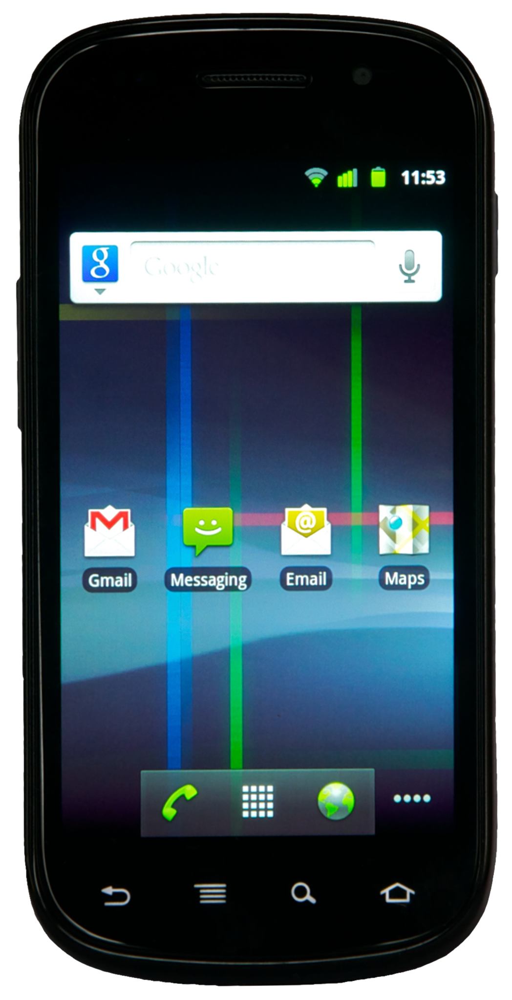

Samsung Nexus S (samsung-crespo)
|
 Samsung Nexus S | |
| Manufacturer | Samsung (Google) |
|---|---|
| Name | Nexus S |
| Codename | samsung-crespo |
| Released | 2010 |
| Category | testing |
| Original software | Android 2.3 |
| postmarketOS kernel | 3.0.101 |
| Hardware | |
| Chipset | Exynos 3 Single 3110 |
| CPU | 1.0 GHz Hummingbird |
| GPU | PowerVR SGX540 |
| Display | 480x800 Super AMOLED |
| Storage | 16 GB |
| Memory | 512 MB |
| Architecture | armv7 |
{kind=link}
| USB Networking |
Works
|
|---|---|
| Flashing |
Partial
|
| Touchscreen |
Works
|
| Display |
Works
|
| WiFi |
Works
|
| FDE | |
| Mainline |
Broken
|
| Battery | |
| 3D Acceleration | |
| Audio |
Works
|
| Bluetooth |
Broken
|
| Camera |
Broken
|
| GPS |
Broken
|
| Mobile data |
Broken
|
| SMS |
Broken
|
| Calls |
Broken
|
| USB OTG | |
| NFC | |
| Accelerometer |
Works
|
|---|---|
| Magnetometer | |
| Ambient Light | |
| Proximity | |
| Hall Effect | |
| Ir TX | |
|---|---|
| TrustZone | |
Contributors
- joeblos
- Romain
Users owning this device
How to enter flash mode
Hold volup+power to power up in bootloader/fastboot mode.
Installation
The Nexus S fastboot flasher mode cannot be used to flash the system (rootfs) image, for two reasons:
- There is a size limit of ~340MB (RAM limitation I assume)
- The system image generated is rejected by the bootloader (bad magic number error)
So we can use the recovery zip flashing method, except for the boot.img (kernel+initramfs) as the pmos install script fails to correctly find the boot partition.
Thus, we use fastboot to flash the boot.img, and use recovery zip to flash the rootfs.
Here are the instructions:
- Get a recent TWRP. v2.8.7.0 is known to work. (CyanogenRecovery does not work)
- Setup your pmos environment
$ pmbootstrap init
- Generate the initramfs
$ pmbootstrap initfs build
- Generate the recovery zip without boot partition
$ pmbootstrap install --android-recovery-zip --recovery-no-kernel
- Put the device in fastboot mode, by holding volume_up+power for a few seconds
- Flash the boot partition
$ pmbootstrap flasher flash_kernel
- Reboot the device in recovery (i.e: TWRP, see above) and enable "ADB Sideload"
- Until this commit is not merged, the following temp fix is required:
- Patch the recovery zip
$ find -name "pmos-samsung-crespo.zip"
path/to/pmos-samsung-crespo.zip
$ cp path/to/pmos-samsung-crespo.zip pmos-samsung-crespo.zip
$ wget https://gitlab.com/joeblos/postmarketos-android-recovery-installer/-/commit/10c161770923649552f29348ea35ff1fa1fcf513.diff -O p1.patch
$ unzip pmos-samsung-crespo.zip chroot/bin/pmos_install_functions
$ patch chroot/bin/pmos_install_functions p1.patch
$ zip -r pmos-samsung-crespo.zip chroot/bin/pmos_install_functions
- Manually sideload the edited recovery zip
$ adb sideload pmos-samsung-crespo.zip
- Done!
Audio
Install alsamixer and a music player:
$ apk add alsa-utils
$ apk add cmus # a console player, only to show music playback works
Open alsamixer, navigate to "Playback Path", change it to `RCV` or `SPK` (`HP` for headphones). Open cmus, add your music, start playback (see cmus manual on how).
fbkeyboard
In order to have a functional fbkeyboard, we need to find the input device associated to the touchscreen :
$ cat /proc/bus/input/devices
I: Bus=0000 Vendor=0000 Product=0000 Version=0000
N: Name="mxt224_ts_input"
P: Phys=
S: Sysfs=/devices/virtual/input/input0
U: Uniq=
H: Handlers=event0
B: PROP=0
B: EV=9
B: ABS=6610000 0
[...]
The Handlers line indicates that the device file is /dev/input/event0.
Inittab method
Add the following to /etc/inittab:
# fbkeyboard tty1::respawn:/usr/bin/fbkeyboard -d /dev/input/event0
This spawns a fbkeyboard on tty1
Init script hack method
The fbkeyboard init script doesn't read config parameters, so in order to associate it with the touchscreen, we need to modify it directly (as root) :
$ sudo vi /etc/init.d/fbkeyboard
[...] command_args="-r $(cat /sys/class/graphics/fbcon/rotate)" [...]
Change this line to :
[...] command_args="-r $(cat /sys/class/graphics/fbcon/rotate) -d /dev/input/event0" [...]
Sensors
Gyro
The gyro is available as an input device :
$ cat /proc/bus/input/devices
[...]
I: Bus=0000 Vendor=0000 Product=0000 Version=0000
N: Name="gyro"
P: Phys=
S: Sysfs=/devices/virtual/input/input1
U: Uniq=
H: Handlers=event1
B: PROP=0
B: EV=5
B: REL=38
[...]
Activate the output:
$ sudo sh -c "echo 1 > /sys/devices/virtual/input/input1/enable"
$ sudo sh -c "echo 1 > /sys/devices/virtual/input/input1/poll_delay"
Read it with evtest (you need to install it before)
$ evtest /dev/input/event1
Accelerometer
On Android the accelerometer data is accessed through a proprietary library. An open source implementation, libakm_free, has been developed (see this page on Github).
Here is a sample program showing how to access the accelerometer data through ioctl function call using the kr3dm.h header file from libakm_free, based on the code in sensors/kr3dm.c and manpages:
/* printf() */
#include <stdio.h>
/* ioctl function */
#include <sys/ioctl.h>
/* open function */
#include <sys/types.h>
#include <sys/stat.h>
#include <fcntl.h>
/* close function */
#include <unistd.h>
/* errno */
#include <errno.h>
/* strerror function */
#include <string.h>
/* struct kr3dm_accel_data and ioctl parameter */
#include "kr3dm.h"
int main(void)
{
char *name = "/dev/accelerometer"; // device file
struct kr3dm_acceldata data; // data structure variable
int fd = -1; // file descriptor for accessing device
/* open the device file */
if ((fd = open(name, O_RDWR)) < 0)
{
printf("Error opening file %s\n", name);
return 1;
}
while (1)
{
/* fill the data structure with ioctl */
if (ioctl(fd, KR3DM_IOCTL_READ_ACCEL_XYZ, &data) < 0)
{
printf("Error reading the data through ioctl: %s\n", strerror(errno));
close(fd);
return 1;
}
printf("X = %d, Y = %d, Z = %d\n", data.x, data.y, data.z);
usleep(50000); /* wait 50ms = 50 000us */
}
close(fd);
return 0;
}
GPS
The Nexus S uses Broadcom BCM4751 GPS.